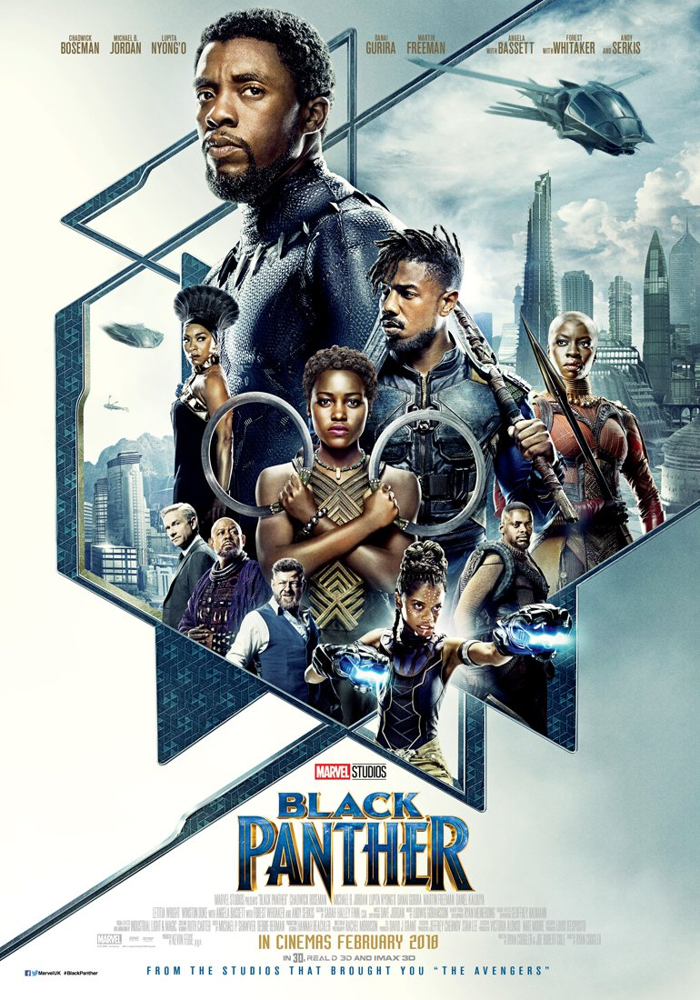
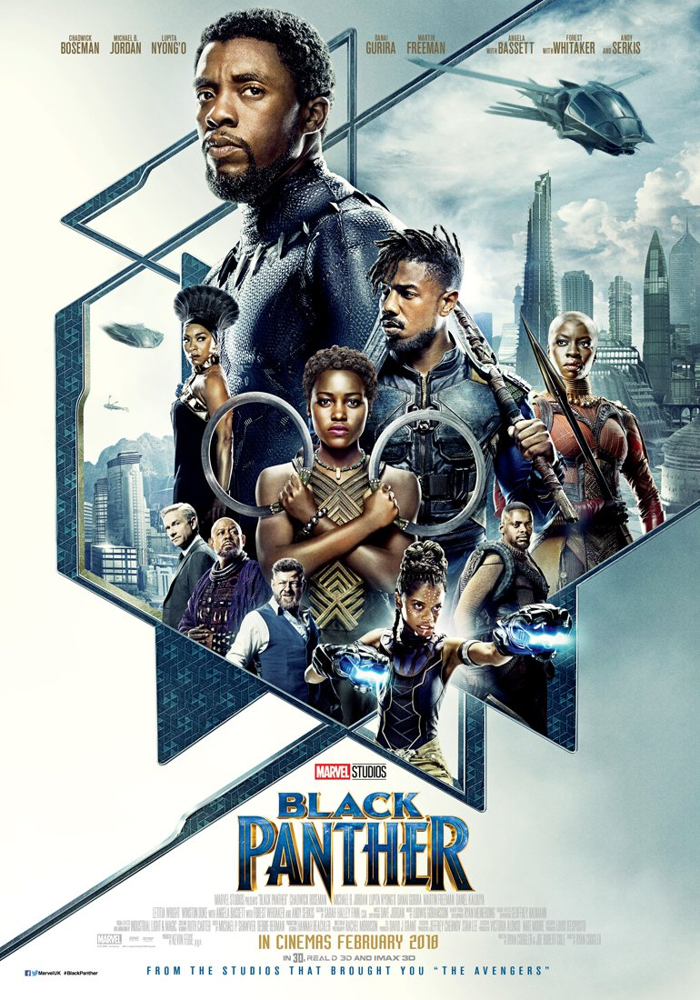

Directed by James Gunn
Studio: Marvel & Walt Disney Studios
Production VFX Supervisor:
Stephane Cerretti
Framestore VFX Supervisor:
Alexis Wajsbrot
Role: Compositing
Tasks: Compositing work setting up shots and tasks early on in the show, as well as templating and designing setup scripts for some interesting tasks, including Mantis' contact lens augmentation.">
Directed by Paul Feig
Studio: Netflix
Production VFX Supervisor:
Erik Nordby
Framestore VFX Supervisor:
Jonathan Fawkner
Framestore 2D Supervisor:
Claudia Lechen
Role: Compositing
Tasks: A broad range of compositing work spanning much of the show - huge environments, castles and buildings, flying creatures, beautiful red skies and more. Lots of lookdev across Framestores sequences as well as doing lots of setup.">
Directed by Taika Waititi
Studio: Marvel Studios
Production VFX Supervisor:
Jake Morrison
Framestore VFX Supervisor:
Matthew Twyford
Role: Compositor
Tasks: Helped with the use and development of approaches to some interesting technical problems, predominantly in the opening sequences, involving 2d and nuke based facial tracking, modification and augmentation using KeenTools. Also helped with a number of temp and trailer deliveries.
">
Directed by Tim Story
Studio: Warner Bros. Pictures
Production VFX Supervisor:
Frazer Churchill
Framestore VFX Supervisor:
Mark Curtis, Andy Kind
Role: Compositor
Tasks: Worked on a variety of different sequences and types of work across different parts of the show - comp work of the very interesting 3d-2d characters, adapting and refining their line work passes, integrating 2d and 3d effects, set extensions, full CG shots, environments work and more.
">
Directed by Lana Wachowski
Studio: Warner Bros. Pictures
Production VFX Supervisor: John Gaeta
Framestore VFX Supervisor: Graham Page
Role: Compositor
Tasks: Assisted with tail end of the show comping a variety of shots spanning CG comp, 3d and 2d element integration, CG creatures, fx and distortion effects, and helping with tech work for final delivery.
">
Directed by Justin Lin
Studio: Universal Studios
Production VFX Supervisor:
Peter Chiang
Framestore VFX Supervisor:
Peter Chiang
Role: Compositing
Tasks: Worked on the 'Armadillo' heist sequence - CG cars, car replacements and augmentations, explosions, destruction and chaos, including the integration of huge stitched arrays for car window background replacements.">
 Directed by John Krasinski
Directed by John Krasinski
 Directed by Ruben Fleischer
Directed by Ruben Fleischer Directed by Ryan Coogler
Directed by Ryan Coogler
 Directed by Ridley Scott
Directed by Ridley Scott
 Directed by James Gunn
Directed by James Gunn